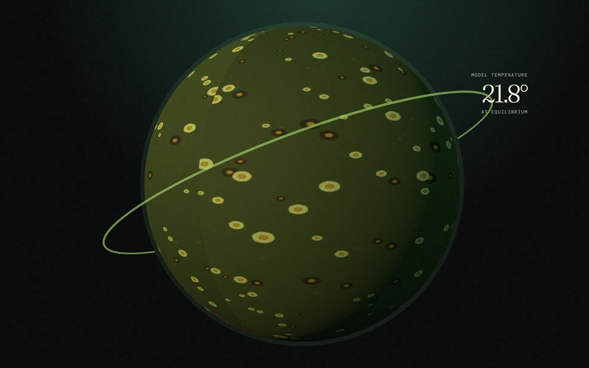

Projects
01 published
Daisyworld
Watson & Lovelock · Tellus · 1983
Can life stabilize a planet's climate without planning to? Two competing flower species regulate a world's temperature through albedo alone — until the star grows bright enough to break it.
Next one in progress
More papers are being rebuilt. Each gets its own folder and its own interactive model.
About
I spent a PhD in geochemical oceanography building box models of the ocean carbon cycle. Daisyworld is a box model too — a whole planet reduced to a handful of coupled equations — which is why it is the first one here. I write software now; these are the papers I kept wanting to run rather than read.
The idea
A paper's central claim is usually a behaviour, not a number — this feedback stabilizes, that threshold is sharp. Behaviour is hard to get from a figure and easy to get from a model you can move.
How they are built
Each project implements the paper's actual equations, not an animation of them. Where the original gives parameter values, those are the defaults, so the reproduced figures really are reproduced.
Self-contained
Every project is a static page in its own folder, with no build step and no server. Open the file and it runs — now, and in ten years.